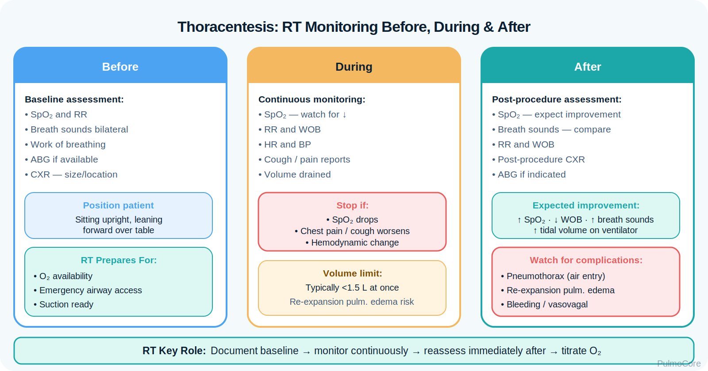

Pleural effusion is abnormal fluid accumulation in the pleural space. This module focuses on RT-level recognition, cause classification, imaging interpretation, oxygenation impact, thoracentesis monitoring, and escalation when fluid compromises ventilation or signals infection, malignancy, trauma, or heart failure.
Category Pleural Space Disorder
Estimated Time 30–40 minutes
Level Core RT Knowledge
Learning Objectives
By the end of this module, learners should be able to connect pleural fluid accumulation with restrictive mechanics, diagnostic findings, cause classification, management decisions, and RT monitoring priorities.
1. Explain pathophysiology Describe how fluid in the pleural space compresses lung tissue, reduces expansion, and causes V/Q mismatch.
2. Classify likely causes Differentiate transudative, exudative, infectious, traumatic, and malignant patterns using clinical clues.
3. Interpret diagnostics Use breath sounds, percussion, chest x-ray, ultrasound, CT, and pleural fluid studies to guide reasoning.
4. Escalate appropriately Recognize tension physiology, empyema, hemothorax, severe hypoxemia, and post-thoracentesis complications.
Disease Snapshot
Pleural effusion is a pleural-space problem, not an airway problem. Fluid collects outside the lung and compresses lung tissue, limiting expansion. Small effusions may be asymptomatic, while large or rapidly developing effusions can cause dyspnea, hypoxemia, tachypnea, and respiratory distress.
What it is: Fluid in the pleural space.
Primary problem: Reduced lung expansion from external compression.
Key imaging clue: Blunted costophrenic angle or meniscus sign on upright chest x-ray.
Acute danger: Severe hypoxemia, mediastinal shift, empyema, hemothorax, or pneumothorax after thoracentesis.
RT priority: Monitor oxygenation, WOB, breath sounds, response to drainage, and complication signs.
RT Clinical Connection
The RT should think: “Is this effusion small and stable, or is the fluid significantly limiting ventilation and oxygenation?” The RT monitors work of breathing, SpO₂, oxygen needs, breath sounds, ABG trends, and immediate changes after thoracentesis or chest tube placement.
Board Prep Frame
Immediately associate pleural effusion with decreased breath sounds, dullness to percussion, decreased tactile fremitus, blunted costophrenic angle, meniscus sign, transudate vs exudate classification, and thoracentesis when diagnosis or symptom relief is needed.
Quick Pre-Check
Start with the core pleural effusion pattern
Which statement best describes the core respiratory problem in pleural effusion?
Anatomy & Pathophysiology
Normally, a small amount of pleural fluid lubricates the pleural surfaces. Pleural effusion develops when fluid formation exceeds fluid removal. As fluid accumulates, it compresses adjacent lung, reduces chest expansion, and can create restrictive mechanics and V/Q mismatch.
Increased fluid formation or reduced lymphatic removal → fluid in pleural space → lung compression → reduced ventilation of affected region → V/Q mismatch → dyspnea and hypoxemia risk.
Causes compressive atelectasis and reduced ventilation.
Restrictive mechanics
The lung cannot expand normally.
Patient may develop tachypnea and shallow breathing.
V/Q mismatch
Perfusion may continue to poorly ventilated lung units.
Can lower PaO₂ and SpO₂.
Mediastinal shift in massive effusion
Large fluid volume pushes structures away.
Can impair cardiopulmonary function and requires urgent attention.
Danger Sign
Rapidly worsening dyspnea, hypotension, tracheal deviation, severe hypoxemia, or absent breath sounds over a large area suggests a high-risk effusion or complication that needs urgent escalation.
Click the Pleural Effusion Hotspots
Click each hotspot to reveal how pleural fluid affects respiratory assessment and RT decisions.
Start here: Click all four hotspots to complete this activity.
0 / 4 hotspots reviewed
Etiology & Cause Patterns
Pleural effusions are commonly grouped by mechanism. Transudative effusions usually come from systemic pressure problems, while exudative effusions usually come from local inflammation, infection, malignancy, pulmonary embolism, or pleural injury.
Cause Pattern
Common Examples
RT Reasoning
Transudative
Heart failure, cirrhosis, nephrotic syndrome.
Often bilateral; treat underlying systemic cause and monitor oxygenation.
Assess shock, oxygenation, breath sounds, and urgent drainage needs.
Chylothorax
Thoracic duct injury or malignancy.
Milky fluid; nutrition/immune concerns plus lung compression.
Sort the Pleural Effusion Clues
Choose the best category for each clue, then check your answers.
Heart failure with bilateral effusions
Pneumonia with fever and pleural inflammation
Cirrhosis with low oncotic pressure
Hypotension after chest trauma with absent breath sounds
Malignancy with recurrent unilateral effusion
Complete the sorting activity to continue.
Clinical Manifestations
Symptoms depend on fluid amount, speed of accumulation, underlying cause, and baseline lung function. RT assessment should compare sides and focus on respiratory distress, oxygenation, and signs that the effusion is causing lung compression.
Pleural effusion usually has decreased breath sounds, dullness, and decreased fremitus. Pneumonia consolidation may have bronchial breath sounds, crackles, egophony, and increased fremitus.
Diagnostics & Assessment
Diagnostics confirm fluid, estimate size, identify loculation, determine cause, and guide whether thoracentesis or drainage is needed.
Exudative process such as infection, malignancy, PE, inflammation.
Low pH or low glucose
Complicated infection or malignant/inflammatory process.
Positive Gram stain/culture
Empyema or infected pleural space.
Blood-like fluid
Hemothorax or malignancy concern depending context.
Fluid Classification & Severity Thinking
Severity is not just “how much fluid.” The RT should consider symptom burden, oxygenation, speed of onset, mediastinal shift, infection signs, trauma context, and whether the patient improves after drainage or medical treatment.
Small/stable Mild symptoms; monitor cause, SpO₂, and progression.
Large/complicated Severe distress, shift, infection, blood, or poor oxygenation; escalate urgently.
Diagnostic Decision Activity
A patient has unilateral pleural effusion, fever, pleuritic pain, high pleural fluid LDH, and low pleural fluid pH. Which pattern is most likely?
Red Flags & Danger Signs
Escalate quickly when pleural fluid causes significant cardiopulmonary compromise or suggests infection, trauma, or a dangerous post-procedure complication.
Red Flag
Why It Matters
Severe or rapidly worsening dyspnea
May indicate large effusion, hemothorax, empyema, or pneumothorax.
Hypotension, tachycardia, trauma history
Concern for hemothorax or shock.
Fever, toxic appearance, low pleural pH
Concern for empyema or complicated parapneumonic effusion.
Mediastinal shift or tracheal deviation
Mass effect from large fluid collection.
Sudden dyspnea after thoracentesis
Possible pneumothorax or re-expansion pulmonary edema.
Increasing oxygen requirement
Worsening V/Q mismatch or complication.
Management & Treatment
Treatment depends on the size, symptoms, and cause. Some transudative effusions improve with treatment of the underlying condition, while symptomatic, unexplained, infected, malignant, or traumatic effusions often require fluid sampling or drainage.
Select the steps in the best general order for a symptomatic patient with suspected pleural effusion.
Assess respiratory distress and oxygenation
Apply/titrate oxygen as needed
Compare breath sounds, percussion, and chest expansion
Review imaging/ultrasound and cause clues
Prepare/monitor for thoracentesis or drainage if indicated
Reassess after intervention and watch for complications
Complete the sequence activity to continue.
Escalation & Procedure Complications
Large or complicated effusions can require urgent drainage. After thoracentesis or chest tube placement, the RT should reassess for improvement and complications.
Visual Placeholder: Thoracentesis monitoring

Watch for: Sudden dyspnea, chest pain, SpO₂ drop, unilateral breath sound loss after procedure.
Think pneumothorax: New pleuritic pain or respiratory worsening after thoracentesis requires urgent assessment.
Think re-expansion edema: Worsening oxygenation after rapid drainage of a large/chronic effusion.
Board Pearl
If the patient acutely worsens after thoracentesis, do not assume the effusion “came back.” Think procedure complication first: pneumothorax, bleeding, or re-expansion pulmonary edema.
Respiratory Therapist Role
The RT is central to bedside recognition, oxygen support, respiratory monitoring, procedure preparation, post-procedure assessment, and escalation. The RT should compare sides carefully and document changes before and after interventions.
RT Task
What to Assess or Do
Why It Matters
Assess oxygenation
SpO₂, PaO₂ if available, oxygen device/flow, cyanosis.
Sudden dyspnea, SpO₂ fall, new chest pain, hypotension, absent sounds.
May indicate pneumothorax, bleeding, or worsening effusion.
Guided Unfolding Case Study
The Shortness of Breath That Wasn’t Wheezing
This guided case reveals one clinical stage at a time. Learners make an RT decision, receive feedback, and then continue to the next stage.
Stage 1: Initial Presentation
A 68-year-old patient with heart failure reports increasing dyspnea and orthopnea. They are tachypneic and appear uncomfortable while lying flat.
RR 28/min
SpO₂ 89% on room air
Breath Sounds Decreased at both bases
Decision Question: What is the priority RT action?
Stage 2: Imaging Result
Chest x-ray shows bilateral blunted costophrenic angles and a meniscus sign, larger on the right. The provider suspects pleural effusion.
Decision Question: Which bedside finding best supports pleural effusion?
Stage 3: Cause Classification
The patient has bilateral effusions, leg edema, elevated BNP, and no fever. The team treats heart failure and monitors respiratory status.
Decision Question: Which fluid pattern is most likely?
Stage 4: Post-Procedure Decision
Another patient undergoes thoracentesis for a large unilateral effusion. Fifteen minutes later, the patient reports sudden pleuritic chest pain and worsening shortness of breath. SpO₂ falls from 95% to 86%.
Decision Question: What should the RT suspect first?
Case Wrap-Up
RT Takeaway: Pleural effusion limits lung expansion from the outside. Assessment centers on oxygenation, WOB, breath sound asymmetry, percussion, imaging, and post-drainage response.
If the patient worsens: sudden dyspnea after thoracentesis, hypotension with trauma, fever/toxicity, or mediastinal shift should trigger urgent escalation.
Knowledge Check
Board-Style Practice
Answer each question to complete this activity. Answer choices shuffle each time the lesson opens.
Question 1
A patient has dyspnea, decreased breath sounds at the right base, dullness to percussion, and a chest x-ray showing a meniscus sign. What does this support?
Question 2
Which condition most commonly produces a transudative pleural effusion?
Question 3
After thoracentesis, a patient develops sudden chest pain, worsening dyspnea, and falling SpO₂. What is the priority concern?
Question 4
Which finding is most consistent with an infected pleural space requiring urgent escalation?
0 / 4 questions answered
FAQ
Common Pleural Effusion Questions
What is the simplest way to understand pleural effusion?
It is fluid outside the lung but inside the chest cavity. The fluid compresses lung tissue and makes expansion harder.
How is pleural effusion different from pneumothorax?
Pleural effusion is fluid in the pleural space. Pneumothorax is air in the pleural space. Effusion often causes dullness; pneumothorax often causes hyperresonance.
Why does pleural effusion cause hypoxemia?
Compressed lung regions ventilate poorly while perfusion may continue, creating V/Q mismatch.
What is the difference between transudate and exudate?
Transudate usually reflects systemic pressure or oncotic problems such as heart failure. Exudate usually reflects local inflammation, infection, malignancy, PE, or pleural injury.
What should the RT watch for after thoracentesis?
Watch for sudden dyspnea, chest pain, SpO₂ decline, hypotension, new absent breath sounds, pneumothorax, bleeding, and re-expansion pulmonary edema.
Why is ultrasound helpful?
Ultrasound confirms fluid, estimates pocket size, identifies septations or loculations, and helps guide safer thoracentesis.
When is chest tube drainage more likely?
Chest tube drainage is more likely for empyema, hemothorax, large complicated effusions, or recurrent effusions needing ongoing drainage.
Summary & Clinical Pearls
Pleural effusion is fluid accumulation in the pleural space that compresses lung tissue, limits expansion, and may cause V/Q mismatch. RT priorities include recognizing bedside findings, supporting oxygenation, interpreting imaging clues, monitoring response to drainage, and escalating dangerous patterns.
Must know: Effusion is fluid outside the lung causing restrictive compression, not airway bronchospasm.